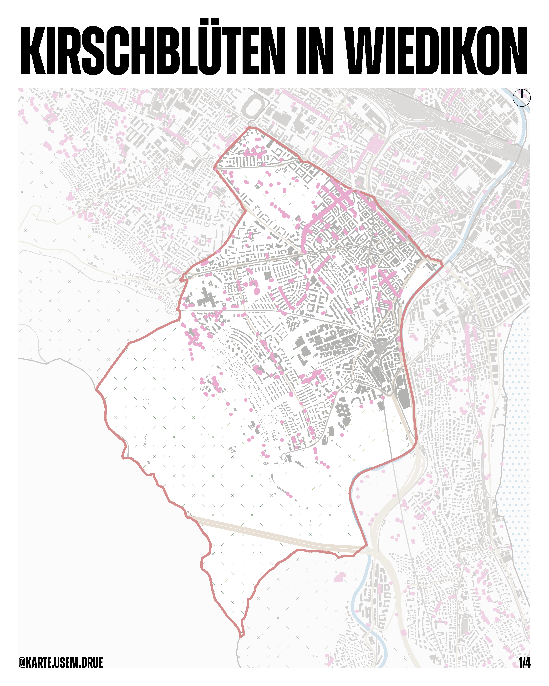
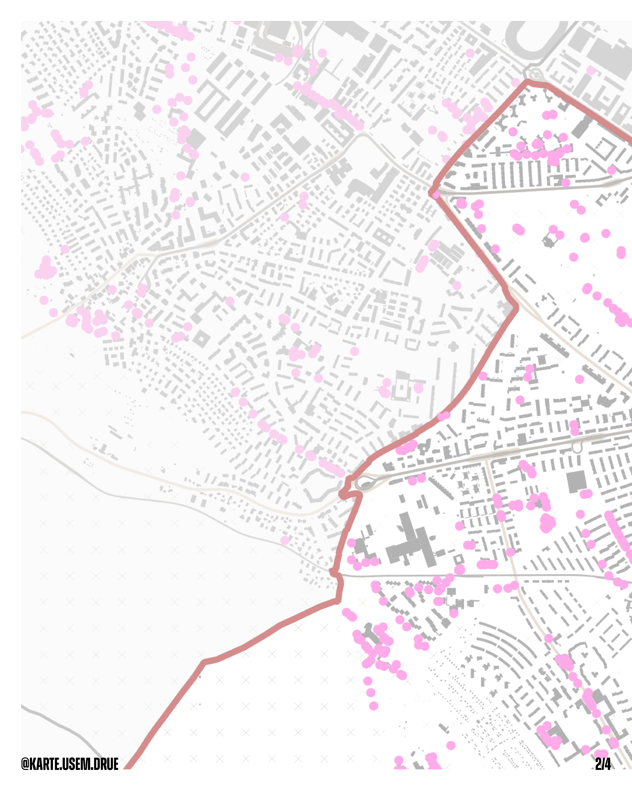
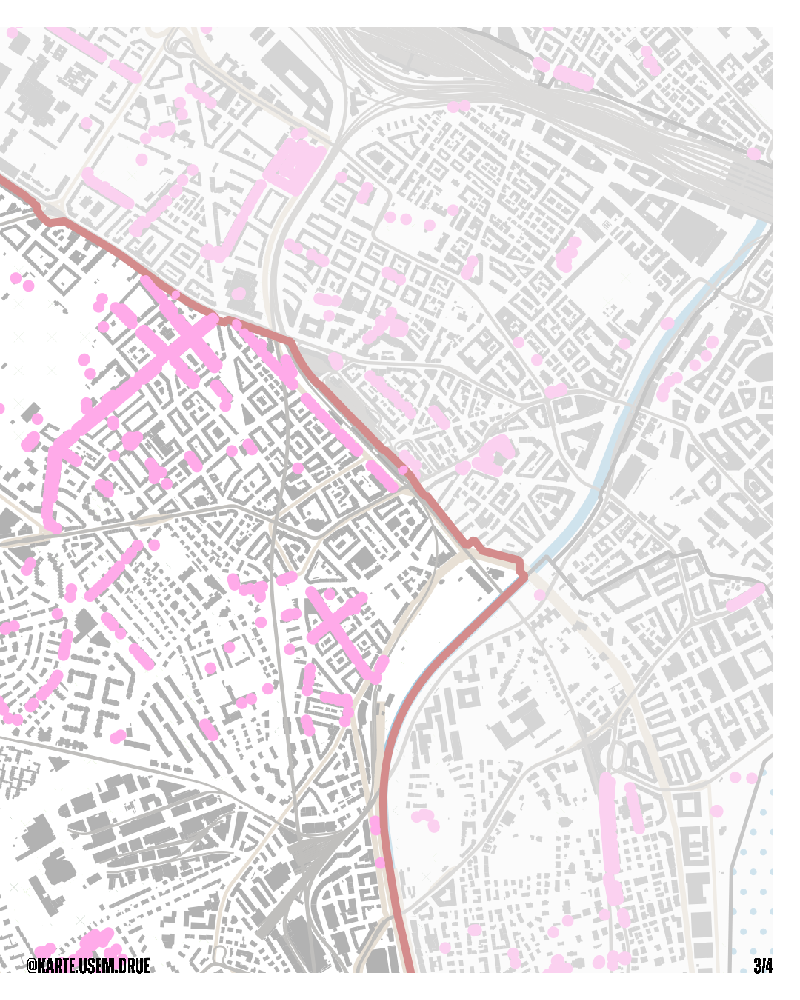
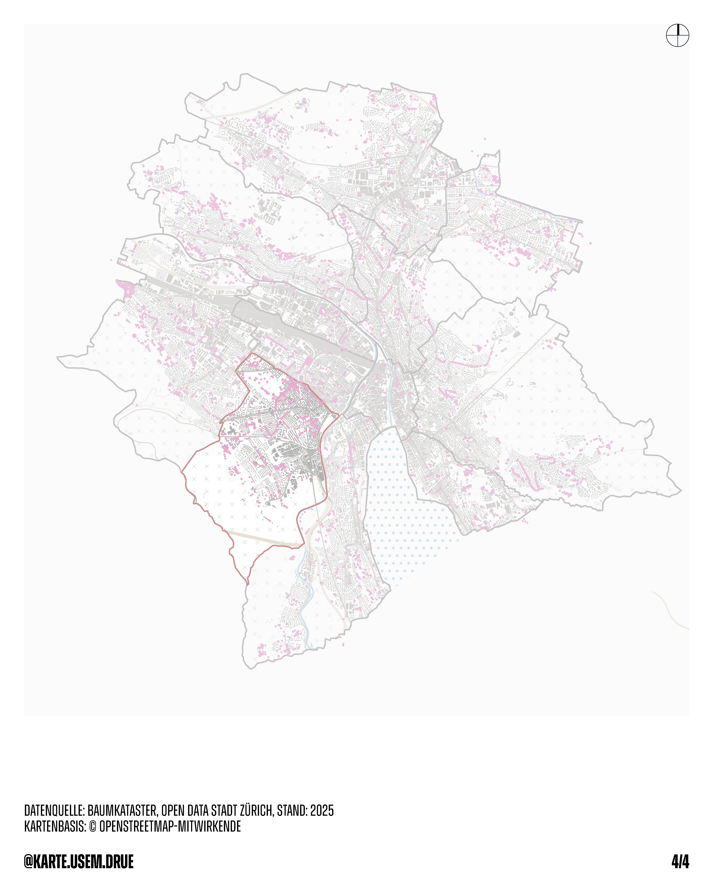

Kirschblüten in Wiedikon
Methodik: QGIS, Adobe InDesign
Zürich blüht und Wiedikon ist mittendrin!
Jedes Jahr im März und April verwandelt die Gattung Prunus Strassen und Parks in rosa Blütenmeer. Im städtischen Baumkataster sind für den Kreis 3 insgesamt 877 Prunus-Bäume erfasst. Stadtweit sind es 6'797, damit stellt Wiedikon rund 13% aller Kirschbäume der Stadt.
Die Blütezeit der Japanischen Zierkirsche beginnt bereits ab März und gehört damit zu den frühesten Frühlingsboten im Strassenraum. Die Bäume stehen im öffentlichen Raum und werden von Grün Stadt Zürich gepflegt und regelmässig kontrolliert.
Datenquelle: Baumkataster, Open Data Stadt Zürich, Stand 2025
Kartenbasis: © OpenStreetMap